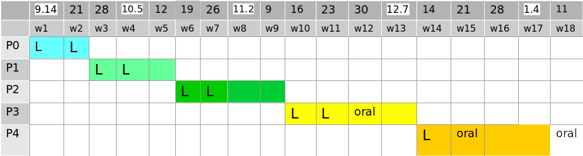

Operating System Labs
Dept. of Computer Science, ECNU, Fall 2020
Basic
Time and Venue
- Lectures:  Monday 8:00am - 9:40am @ 教书院 105
- Labs:  Monday 10:00am - 11:40am @ 理科楼 B519
Stuff
Instructor: Â Yuanbin Wu
Email: Â ybwu[at]cs.ecnu.edu.cn
Office: Â 911 Science Building B
TA1: Â Yi Gao
Email: Â 296804129[at]qq.com
TA2: Â Mengwen Liang
Email: Â moonliang_vvv[at]163.com
Projects
Name Your Projects
StudentNumber_Name_LabX.zip (e.g., 10185110001_李明_Lab0.zip)
Submit Your Projects
oslab2020[at]163.com
Please check the email address carefully (your TA has a sad story on this 🤐).
Topics
Downloads
Lecture Slides
Timeline (tentative)

Plagiarism Policy
ALL participants will loss ALL credits of the project if any improper code/doc sharing is discovered.
Late Policy
- For P0, P1, late handins will NOT be accepted.
- For P2, P3, P4:
- Your group will have 3 “late days”.
- You need to email TA at least 1 hour before the deadline.
- If all your 3 “late days†are used, late handins will not be accepted.
Readings
Main
Unix Programming
- Advanced Programming in the UNIX Environment,
W. Richard Stevens, Stephen A. Rago
C Programming
- The C Programming Language,
Brian W Kernighan, Dennis M. Ritchie
Linux Kernel
- Linux Kernel Development,
Robert Love